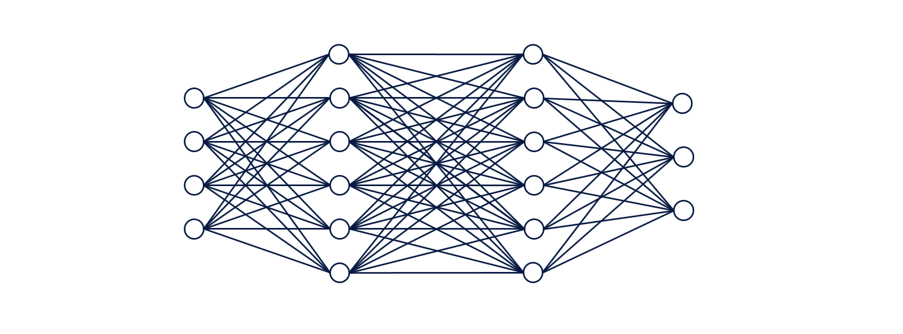
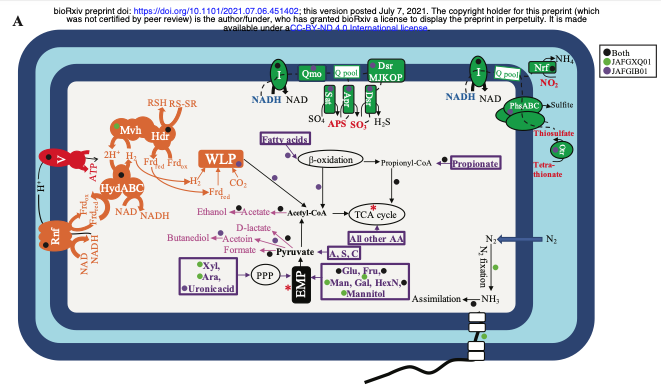

Sergio Emilio Mares
Berkeley, CA
Education
Ph.D. Computational Biology
University of California, Berkeley
Expected Graduation: 2026
B.S in Biochemistry
B.S in Microbiology/Cell Biology and Genetics
Oklahoma State University
2021
Languages
Spanish
English
Interests
Epigenetics
Cancer
Deep Learning
Chess
I am a graduate student at UC Berkeley studying Computational Biology.
Research and Publications
Decomposing epigenetic heritable gene silencing with Deep Learning
Berkeley, CA

Deep learning algorithms are a growing set of models are trained with raw-data, in this case DNA sequences, and over a cycle of itierations, these abstractlly can stastically learn to predict an given output data. In this work this model was generated to introduce DNA Promoter sequences and predict the epigenetic hertiable score. The data from this work is from here.
carP , encoding a Ca 2+ -regulated putative phytase, is evolutionarily conserved in Pseudomonas aeruginosa and has potential as a biomarker
Stillwater, OK
Here, we studied the conservation of carP sequence and its occurrence in diverse phylogenetic groups of bacteria. In silico analysis revealed that carP and its two paralogues
PA2017 and PA0319 are primarily present in P. aeruginosa and belong to the core genome of the species. We identified 155 single nucleotide alterations within carP, 42 of
which lead to missense mutations with only three that affected the predicted 3D structure of the protein. PCR analyses with carP-specific primers detected
P. aeruginosa specifically in 70 clinical and environmental samples. Sequence comparison demonstrated that carP is overall highly conserved in P. aeruginosa
isolated from diverse environments. Such evolutionary preservation of carP illustrates its importance for P. aeruginosa adaptations to diverse environments
and demonstrates its potential as a biomarker.
You can access my repository with protein models, figures and other files from the study here
- Sergio E. Mares , M. King, A. Kubo, A. Khavov, E. Lutter, N. Youssef and M. Patrauchan. carP, encoding a Ca 2+–regulated putative phytase, is evolutionarily conserved in Pseudomonas aeruginosa and has potential as a biomarker. Journal of Microbiology. December 2020. https://doi.org/10.1099/mic.0.001004
Characterizing the Ca2+ netowrk and the role of efHP/calC in Pseudomonas aeruginosa
Stillwater, OK

Calcium is well known as a second messenger in eukaryotes, where Ca2+ signaling controls life-sustaining cellular processes.
Although bacteria produce the components required for Ca2+ signaling, little is known about the mechanisms of bacterial Ca2+ signaling.
Previously, we have identified a putative Ca2+-binding protein EfhP (PA4107) and CalC as proteins involved in the calcum network.
- Biraj B. Kayastha, A. Kubo, J. Burch-Konda, R. L. Dohmen, J. L. McCoy, R. R. Rogers, S. E. Mares , J. Bevere, A. Huckaby, W. Witt, S. Peng, B. Chaudhary, S. Mohanty, M. Barbier, G. Cook, J. Deng & M. Patrauchan. EF-hand protein, EfhP, specifically binds Ca2+ and mediates Ca2+ regulation of virulence in a human pathogen Pseudomonas aeruginosa. Nature Scientific reports. May 2022. https://doi.org/10.1038/s41598-022-12584-9
Baculovirus actin-rearrangement-inducing factor ARIF-1 induces the formation of dynamic clusters of invadosome-like structures
Berkeley, CA
Studies has shown that the AcMNPV protein actin rearrangement inducing factor-1 (Arif-1) is necessary and sufficient to induce the formation of cortical concentrations of polymerized actin, termed ventral aggregates (VAs), in cultured insect cells. Bombyx mori nucleopolyhedrosis virus (BmNPV), plays a role in enhancing systemic infection in B. mori larvae. However, it is still unknown if BmNPV Arif-1 is sufficient to cause the formation of VAs, or what role membrane anchoring regions of Arif-1 play in this process.
- Domokos I. Lauko, Taro Ohkawa, Sergio E. Mares , Matthew D. Welch. Baculovirus actin-rearrangement-inducing factor ARIF-1 induces the formation of dynamic clusters of invadosome structures. Molecular Biology of the Cell. July 2021. https://doi.org/10.1091/mbc.E20-11-0705
Genomes of Novel Myxococcota Reveal Severely Curtailed Machineries for Predation and Cellular Differentiation
Stillwater, OK

Detailed analysis of 13 distinct pathways/processes crucial to predation and cellular differentiation revealed severely curtailed machineries, with the notable absence of homologs for key transcription factors, outer membrane exchange receptor (TraA), and the majority of sporulation-specific and A-motility-specific genes. We propose that predation and cellular differentiation represent a niche adaptation strategy that evolved circa 500 million years ago (Mya) in response to the rise of soil as a distinct habitat on Earth.
- Chelsea L. Murphy, R. Yang, T. Decker, C. Cavalliere, V. Andreev, N. Bircher, J.Cornell, R. Dohmen, C. J. Pratt, A. Grinnell, J. Higgs, C. Jett, E. Gillett, R. Khadka, S. E. Mares , C. Meili, J. Liu, H. Mukhtar, Mostafa S. Elshahed, Noha H. Youssef. Genomes of novel Myxococcota reveal severely curtailed machineries for predation and cellular differentiation. BioXRv. July 2021. https://doi.org/10.1101/2021.07.06.451402
Optimizing metagenomic differential methodologies for high quality low read bugs
Rio Piedras, PR
Rhizosphere communities from similar niches and variants in geologies have shown to impact the composition and plant phenotype. Methodologies conducted to process metagenomics begin by relying on pre-filtering steps of redundant, low quality sequences, and assembly of contigs. Authors have claimed that metagenomic research is computationally constrained, and novel algorithms and techniques must be developed to further the field.